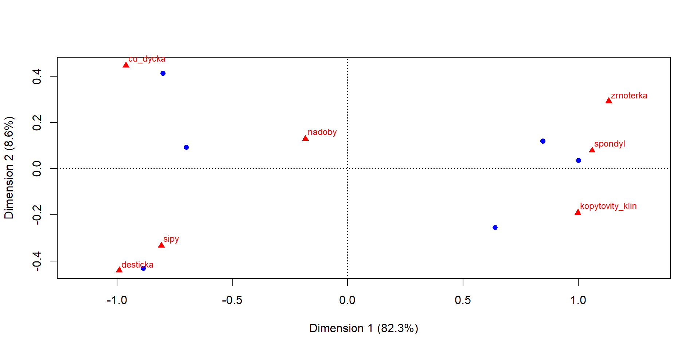

[1] 1 2 3 4 5 6 7 8 9 10Correspondence analysis
Goals
- new ways of data manipulation
- combining vectors into dataframe
- columns, rows and values selection
- mathematical operations in rows
- some fancy stuff to make your ggplot look better
- introduction to the correspondence analysis in R
Data Manipulation
Vectors
- you already know vector - a combination of several values stored in a single object
Combining different vectors with rbind and cbind
you can combine different vectors into matrixes or dataframes
rbind()combine vectors into Rows,cbind()into Columnsthe vectors have to be of the same length!
cbind
cisla stovky pismena
[1,] "1" "101" "a"
[2,] "2" "102" "b"
[3,] "3" "103" "c"
[4,] "4" "104" "d"
[5,] "5" "105" "e" rbind
Dataframe
You can then very simply create a dataframe:
But you have to check whether the numbers are really numbers
'data.frame': 10 obs. of 3 variables:
$ cisla : chr "1" "2" "3" "4" ...
$ stovky : chr "101" "102" "103" "104" ...
$ pismena: chr "a" "b" "c" "d" ...Whoa! The numbers are not numbers but characters. You will have to fix it by as.numeric() if you want to do mathematical operations. It is also a good practice to always check the structure of your dataframe before carrying out any operations.
Square brackets
cisla stovky pismena
1 1 101 a
2 2 102 b
3 3 103 c
4 4 104 dwith square brackets
[]you can easily select specific columns, rows or cellsyour_dataframe[row number, column number]1st row:
- 1st column:
- value in the 1st row and 2nd column:
Mathematics in dataframes
Now you can make some mathematical operations by selecting specific cells with square brackets:
You can even create a new column with the results:
cisla stovky pismena novy_sloupec
1 1 101 a 11
2 2 102 b 12
3 3 103 c 13
4 4 104 d 14- or alternatilevy use
mutate()function fromdplyrpackage
rowSums
- you can calculate sums of specific columuns in each row by
rowSums()
cisla stovky pismena novy_sloupec este_jeden_sloupec sucet
1 1 101 a 11 101 102
2 2 102 b 12 102 104
3 3 103 c 13 103 106
4 4 104 d 14 104 108- altenative solution in
dplyr:
colnames
- sometimes you will need to select names of the columns to rename them or create specific vector from them
- you can manipulate with column names with function
colnames()
[1] "cisla" "stovky" "pismena"
[4] "novy_sloupec" "este_jeden_sloupec" "sucet" Let’s have a look on table radky, the colnames look bit strange
X1 X2 X3 X4 X5 X6 X7 X8 X9 X10
cisla 1 2 3 4 5 6 7 8 9 10
stovky 101 102 103 104 105 106 107 108 109 110
pismena a b c d e f g h i jLet’s say we will name the columns after the values in pismena row
a b c d e f g h i j
cisla "1" "2" "3" "4" "5" "6" "7" "8" "9" "10"
stovky "101" "102" "103" "104" "105" "106" "107" "108" "109" "110"
pismena "a" "b" "c" "d" "e" "f" "g" "h" "i" "j" You can also remove row used for column names:
Exercise
Exercise
- copy, paste and run this chunk code from our website:
datace <- c("ne.lin", "ne.lin", "en.zvo", "ne.lin", "en.zvo", "en.zvo")
nadoby <- c(4, 3, 7, 2, 4, 3)
sipy <- c(0,1,3,0, 2, 4)
cu_dycka <- c(0,0,3,0, 4,2)
spondyl <- c(5,2,0,4, 0, 0)
kopytovity_klin <- c(4,5,0,4, 0, 0)
desticka <- c(0,0,2,0,1, 3)
zrnoterka <- c(1, 0, 0, 1, 0, 0)
pohrebiste <- data.frame(datace, nadoby, sipy, cu_dycka, spondyl, kopytovity_klin, desticka, zrnoterka) datace nadoby sipy cu_dycka spondyl kopytovity_klin desticka zrnoterka
1 ne.lin 4 0 0 5 4 0 1
2 ne.lin 3 1 0 2 5 0 0
3 en.zvo 7 3 3 0 0 2 0
4 ne.lin 2 0 0 4 4 0 1
5 en.zvo 4 2 4 0 0 1 0
6 en.zvo 3 4 2 0 0 3 0- create a new column with the sum of the artefacts found in each grave
- create a new column called “ID” where each grave has an unique number
Solution
- create a new column with the sum of the artefacts found in each grave
datace nadoby sipy cu_dycka spondyl kopytovity_klin desticka zrnoterka
1 ne.lin 4 0 0 5 4 0 1
2 ne.lin 3 1 0 2 5 0 0
3 en.zvo 7 3 3 0 0 2 0
4 ne.lin 2 0 0 4 4 0 1
5 en.zvo 4 2 4 0 0 1 0
6 en.zvo 3 4 2 0 0 3 0
pocet_artefaktu ID
1 14 1
2 11 2
3 15 3
4 11 4
5 11 5
6 12 6- alternative solution with package
dplyr:
Correspondence analysis (CA)
A bit of theory
- one of the multivatiate statistical methods
- suitable for contingency tables (kontingenční tabulka) where you have counts of two or more categorical variables
- one type of variable are stored in rows, other in columns
- typicaly, you can visualise result of CA with scatterplots
A simple contingency table
- now, have a look at this simple contingency table of an fictional Bell Beaker burial site: one variable is sex of buried individuals (columns), second the position of their bodies (rows)
| male | female | |
|---|---|---|
| left side | 10 | 1 |
| right side | 2 | 12 |
- already from the first sight it is obvious that females were predominantly buried on their right site and male on their left site
- correspondence analysis will help you when your contingency table have much more variables and the relations between variables are then much harder to observe
Use of CA
- typical archaeological uses of CA:
- seriation
- counts of different types of artefacts (eg. artefacts in burial sites, types of chipped stone industry,…)
- presence or absence of different features in archaeological collections (e.g.presence or absence of construction elements in graves)
- it works only with discrete numbers (celá čísla) - i.e. counts, or dichotomies (presence / absence, 1/0)
Quick correspondence analysis
- imagine we have a burial site and want to observe relation between numbers of different types of artefacts found in the graves and between datations of the graves
Research questions
- are there certain types of artefacts related to certain datations?
- are there differencies within the different datations?
Materials and methods
- we will use the fictional data from the last exercise, the dataframe “pohrebiste”
- TASKS:
- clean your workplace and load the “pohrebiste” data from our webpage again
- install and load package
ca
datace nadoby sipy cu_dycka spondyl kopytovity_klin desticka zrnoterka
1 ne.lin 4 0 0 5 4 0 1
2 ne.lin 3 1 0 2 5 0 0
3 en.zvo 7 3 3 0 0 2 0
4 ne.lin 2 0 0 4 4 0 1
5 en.zvo 4 2 4 0 0 1 0
6 en.zvo 3 4 2 0 0 3 0Results
- notice we are running the analysis only with columns which represent number of artefacts (2nd to 8th)
- also notice there are two types of points in the plot:
- blue circles represent row values, which are in this case graves
- red triangles represent column values - numbers of specific artefacts
Interpretation

- there are two clearly distinct groups of graves with distinct types of artefacts
- on the other hand number of vessels seems to be indifferent to the groups - both grave groups share similar number of ceramic vessels
- the x axis explains 82 % of the difference between graves and artefacts, y axis only 9 %. This mean that the difference between those two groups is bigger then within them. In other words, the difference between e.g. copper dagger (cu_dycka) and spondylus is much much greater then between the copper dagger and arrow heads (sipy)
Now let’s have a closer look
Principal inertias (eigenvalues):
1 2 3 4 5
Value 0.667126 0.069873 0.054181 0.018769 0.001128
Percentage 82.25% 8.61% 6.68% 2.31% 0.14%
Rows:
[,1] [,2] [,3] [,4] [,5] [,6]
Mass 0.189189 0.148649 0.202703 0.148649 0.148649 0.162162
ChiDist 0.879868 0.836034 0.738122 1.026842 0.926948 1.011206
Inertia 0.146464 0.103898 0.110437 0.156736 0.127724 0.165817
Dim. 1 1.037358 0.783658 -0.856640 1.225783 -0.979198 -1.083841
Dim. 2 0.450424 -0.963242 0.350276 0.134612 1.561622 -1.635249
Columns:
nadoby sipy cu_dycka spondyl kopytovity_klin desticka
Mass 0.310811 0.135135 0.121622 0.148649 0.175676 0.081081
ChiDist 0.300899 0.875803 1.086977 1.097286 1.064182 1.129904
Inertia 0.028141 0.103653 0.143698 0.178978 0.198950 0.103515
Dim. 1 -0.224254 -0.989256 -1.177308 1.297475 1.221578 -1.212896
Dim. 2 0.489148 -1.259831 1.692644 0.297174 -0.720551 -1.666812
zrnoterka
Mass 0.027027
ChiDist 1.415361
Inertia 0.054142
Dim. 1 1.385408
Dim. 2 1.106622- you can see that this is not a dataframe, but a so called “list” with much complicated structure. Even so, it is possible to extract coordinates of the points (we will show it later) and use them for other analysis or visualisation in ggplot.
The structure of the CA result
- this looks even more complicated, but don’t worry!
List of 16
$ sv : num [1:5] 0.8168 0.2643 0.2328 0.137 0.0336
$ nd : logi NA
$ rownames : NULL
$ rowmass : num [1:6] 0.189 0.149 0.203 0.149 0.149 ...
$ rowdist : num [1:6] 0.88 0.836 0.738 1.027 0.927 ...
$ rowinertia: num [1:6] 0.146 0.104 0.11 0.157 0.128 ...
$ rowcoord : num [1:6, 1:5] 1.037 0.784 -0.857 1.226 -0.979 ...
..- attr(*, "dimnames")=List of 2
.. ..$ : NULL
.. ..$ : chr [1:5] "Dim1" "Dim2" "Dim3" "Dim4" ...
$ rowsup : logi(0)
$ colnames : chr [1:7] "nadoby" "sipy" "cu_dycka" "spondyl" ...
$ colmass : num [1:7] 0.311 0.135 0.122 0.149 0.176 ...
$ coldist : num [1:7] 0.301 0.876 1.087 1.097 1.064 ...
$ colinertia: num [1:7] 0.0281 0.1037 0.1437 0.179 0.1989 ...
$ colcoord : num [1:7, 1:5] -0.224 -0.989 -1.177 1.297 1.222 ...
..- attr(*, "dimnames")=List of 2
.. ..$ : chr [1:7] "nadoby" "sipy" "cu_dycka" "spondyl" ...
.. ..$ : chr [1:5] "Dim1" "Dim2" "Dim3" "Dim4" ...
$ colsup : logi(0)
$ N : num [1:6, 1:7] 4 3 7 2 4 3 0 1 3 0 ...
$ call : language ca.matrix(obj = as.matrix(obj))
- attr(*, "class")= chr "ca"Visualising CA in ggplot
- in order to visualize data in ggplot, they have to be in dataframe format
- so the first step will be extracting coordinates from the CA result
- in this case we will extract them from first two dimensions only
x1 and x2 represent coordinates of row values (graves), y1 and y2 represent column values (artefacts)
quick check:

Creating dataframes
now we need to create dataframes with for both row values and column values
row values (graves):
- in this step, we can combine various variables describing your objects with row values. We have added “id” and “datace”
Datace X1 X2 ID
1 ne.lin 1.0373584 0.4504244 1
2 ne.lin 0.7836584 -0.9632417 2
3 en.zvo -0.8566397 0.3502757 3
4 ne.lin 1.2257826 0.1346118 4- column values (artefacts):
Y1 Y2 Artefakty
1 -0.2242544 0.4891476 nadoby
2 -0.9892557 -1.2598313 sipy
3 -1.1773081 1.6926442 cu_dycka
4 1.2974752 0.2971739 spondylA very simple ggplot
- lets have a quick ggplot
- notice there are 2 types of values in 2 dataframes, so you need to call
geom_point()two times - in ggplot we can also easily distinguish different datations by color
Advanced ggplot
- now you can play more with adjusting the plot

Solution
- you can add text to your ggplot by
geom_text() - you can also rename plot labels without the need to rename variables in your original dataframe. To do so, create a vector with label names and then specify it in
geom_text(...,aes(label=your_vector)) - for more tips how to adjust text see ggplot2.tidyverse.org
ggplot()+
geom_vline(xintercept = 0, color="gray80", linewidth = 0.75, linetype = "dashed")+
geom_hline(yintercept = 0, color="gray80", linewidth = 0.75, linetype = "dashed")+
geom_point(data = coord_datace, aes(X1, X2, colour = Datace), size = 2)+
geom_point(data = coord_artefakty, aes(Y1, Y2), shape = 17, size = 2)+
geom_text(data = coord_artefakty, aes(label = labels_artefacts, x=Y1, y=Y2), vjust = -1.5)+
geom_text(data = coord_datace, aes(label = ID, x=X1, y=X2), vjust = 1.75)+
xlim(-1.5, 1.6)+
ylim(-1.75, 2)+
labs(x="Dimenze 1 - 82,3 %", y="Dimenze 2 - 8,6 %",
title = "Korespondenční analýza fiktivního pohřebiště")+
theme_light()
AES_707 Statistics seminar for archaeologists | Correspondence analysis